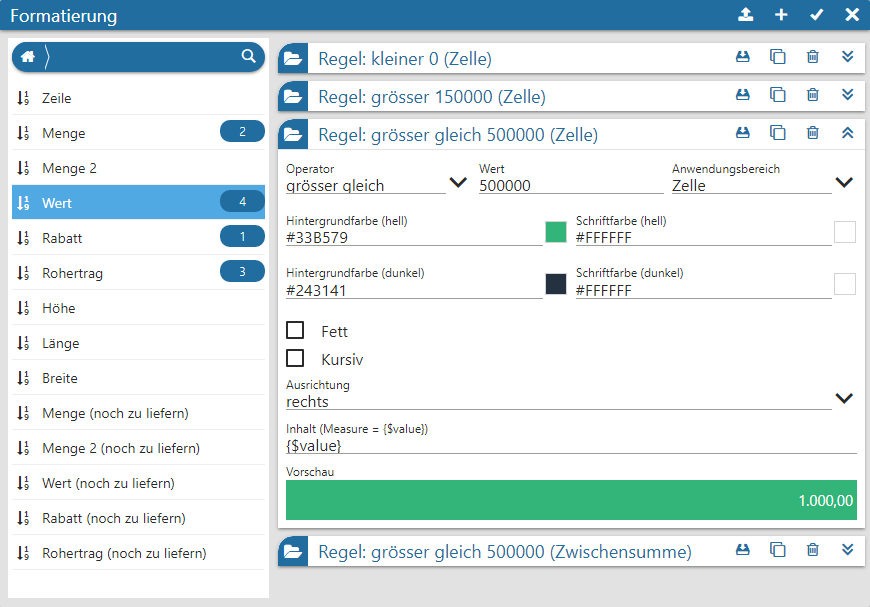
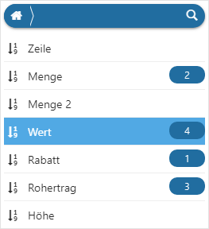
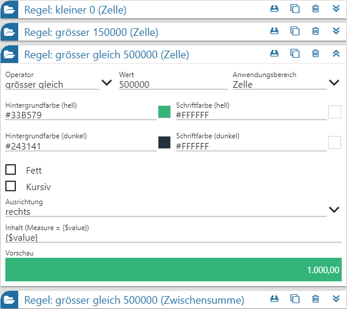
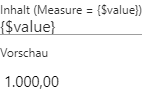
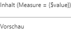
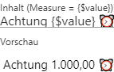

Die Analyse der Daten im Widget Olap erfolgt in der Regel durch die Betrachtung des Zahlenmaterials, welches je nach Auswertung sehr umfangreich sein kann.
Um hier nicht den Überblick zu verlieren und direkt auf "wichtige" Informationen aufmerksam gemacht zu werden, steht im Olap die Formatierung zur Verfügung. Diese ermöglicht es, Zahlen nach bestimmten Regeln gesondert darzustellen.
Hinweis
Der Aufruf des Fensters erfolgt über die Einstellungen des Olap-Widgets (Button "Formatierung").

Mit Hilfe der folgenden Einstellungen können pro Measure x unterschiedliche Formatierungen hinterlegt werden. Hierbei ist jede Formatierung automatisch mit einer Regel verbunden, d.h. kommt nur dann zum Tragen, wenn die Regel zutrifft.
Measures

Ø Tabelle "Measures"
In der linken Tabelle des Fensters werden alle Measures der Datenquelle aufgeführt. Die Zahl hinter der Bezeichnung gibt dabei jeweils an, ob bereits Regeln (Formatierungen) für die Measure existieren. Um bestehende Regeln zu bearbeitet oder neue anzulegen, muss nur die gewünschte Measure ausgewählt werden.
Regeln

Nach der Auswahl einer Measure werden im rechten Bereich des Bildschirms die zugehörigen Regeln aufgeführt. Hier sind nun folgende Tätigkeiten möglich:
ü Neue Regeln anlegen
Durch
Anwahl des Buttons wird eine neue
Regel eingefügt, wobei alle Regel- und Formatierungseinstellungen dem Standard
entsprechen.
ü Regel editieren
Um eine Regel
zu editieren wird diese durch Anwahl des Icons zunächst aufgeklappt. Anschließend
können die gewünschten Anpassungen vorgenommen werden.
ü Regel kopieren
Soll eine
bestehende Regel als Ausgangspunkt für ein neue dienen, so kann eine Kopie durch
Anwahl des Icons erzeugt
werden.
Ist wiederum eine Kopie von Regeln zwischen unterschiedlichen
Measures erwünscht, so kann über die Zwischenablage gearbeitet werden (via Icon
die Regel in die Zwischenablage
kopieren und via Button bei der
gewünschten Measure einfügen).
ü Regeln verschieben
Die Regeln
werden pro Measure von "oben nach unten" abgearbeitet, wobei jede Regel
auf Gültigkeit geprüft wird! D.h. die Reihenfolge der Regeln ist entscheidend.
Eine Anpassung kann jederzeit per Drag & Drop vorgenommen werden.
ü Regeln löschen
Wenn eine Regel
gelöscht werden soll, so kann dieses durch Anwahl des Icon erfolgen.
Pro Regel stehen folgende Einstellungen zur Verfügung:
Ø Operator / Wert
Mit Hilfe der Felder "Operator" und "Wert" wird die Bedingung der Regel definiert.
Ø Anwendungsbereich
An dieser Stelle kann hinterlegt werden, für welchen Bereich des Olaps die Regel gelten soll. Hierbei stehen die folgenden Auswahlen zur Verfügung:
ü Zelle
ü Zwischensumme
ü Gesamtsumme
ü alle Bereiche
Ø Farbe ("Hintergrundfarbe (hell)" bis "Schriftfarbe (dunkel)")
Mit Hilfe dieser Felder kann das Farbdesign des darzustellenden Inhalts (inklusive Zelle) beeinflusst werden.
Ø Attribute ("Fett" bis "Ausrichtung")
Die Felder "Fett" "Kursiv" und "Ausrichtung" steuern die Attribute des Inhalts.
Ø Inhalt (Measure = {$value})
An dieser Stelle kann definiert werden, ob neben der Measure (d.h. der Zahl) noch weiterer Text und / oder ein Symbol angezeigt werden soll. Der Eintrag {$value} dient dabei als Platzhalter für die anzuzeigende Zahl.
Beispiele
ü Anzeige der Zahl (Standard)
Zur
Anzeige der Zahl muss nur der Platzhalter {$value} hinterlegt sein.

ü Keine Zahl
Damit im Olap
"nichts" angezeigt wird, muss unter "Inhalt" der Platzhalter entfernt und ein
Leerzeichen eingefügt werden.

ü Zahl mit Text / Symbol
Soll
neben der Zahl ein Text oder Symbol dargestellt werden, so kann dieses
zusätzlich zum Platzhalter hinterlegt werden (Symbolauswahl per Windowstaste + .
aufrufbar, wobei nicht alle unterstützt werden)

Buttons
Ø aus Zwischenablage einfügen
Wurde eine Regel über das Icon in die Zwischenablage kopieren, so kann diese mit Hilfe des Buttons bei der gewünschten Measure einfügen werden.
Ø neue Regel
Durch Anwahl des Buttons wird für die aktuelle Measure eine neue Regel eingefügt, wobei alle Regel- und Formatierungseinstellungen dem Standard entsprechen.
Ø Ok
Durch Anwahl des Buttons "Ok" werden die Regeln gespeichert und das Fenster geschlossen. Angewendet werden diese (neuen) Formatierungen bei der nächsten Aktualisierung des Olaps.
Ø Ende
Durch Anwahl des Buttons "Ende" wird das Fenster geschlossen und nicht gespeicherte Änderungen verworfen.